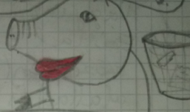
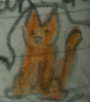
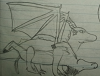
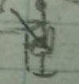

Dinoisták hivatalos Fóruma |
|
Arckönyv |
|
DínóbácsiTeljes nevén A Rettenetes Dínóbácsi (ARD) az egyetlen dinoszaurusz a világon, mely túlélte a Kréta időszak végi tömeges kihalási eseményt. A tudósok nem ismerik el - fizikai tudásuk fejletlensége okán - de valójában ezt a kihalási hullámot a Vadkan szele (5,5-es érték) okozta, ennek erősségét sejtteti, hogy elsülésének helyén (Mexikói öböl) szagától még a föld is elpárolgott. Dínóbácsi - mint kiderült - valójában halhatatlan és ez okozta túlélését, még a mai napig is aktívan tevékenykedik, hogy mit? A válasz... (1.ábra) Az alábbiakban láthatjuk ARD alapvető adatait: Megjelenését tekintve zöld színű, elülső végtagjai erősek, markolni képesek. Ragadozó fajhoz való tartozása ellenére szája alkalmas emberi beszédre, mimikára és lefetyelés nélküli ivásra (pl. növényevőkhöz, mindenevőkhöz hasonlóan), törzsét változatos dőlésszögben tartja, gyakran felegyenesedetten jár. Szövetei szinte bármilyen mechanikai támadásnak ellenállnak. Hímtagjáról lentebb. Dínóbácsi az inteligens élőlények közé tartozik, ezért miután bekövetkezett a kihalási hullám és megváltozott életének szerkezete, elkezdte kiépíteni új rendszerét, mellyel a Föld uralkodójává emelte magát. Alagutakat fúrt, mely a gyors utazást biztosította, valamint egy sokat termelt váladékát elszállító és összegyűjtő rendszert épített ki elvezetőkkel és vermekkel. Ezt a váladékát újrahasznosítja és felvezeti pl. az öntözőrendszerekbe és az alagutakba (gyorsabb csúszás). A nagyon régi, megkövült terméket az emberek is elkezdték felhasználni, az ilyen régi, lezárt vermekből alakultak ki a legnagyobb sóbányák. (2. ábra) ARD mára már átvette az egész világ vezetését (háttérhatalom formájában). Először Eurázsiát (Kr.e. 11.sz.), majd Amerikát (Kr.e. 5.sz.), a 10. században Afrikát, végül Ausztráliát hódította meg a 11. században. Amerikát a 15. században újra meg kellett hódítania az európaiak érkezése miatt, majd a 20. században az Antarktiszi Egyezmény nyomán a déli kontinenst is a magáénak tudhatta, itt építette meg a második ezredforduló idején a harmadik űrállomását (első: Csomolungma (Kr.e. 5611), védelem: Jeti; második: Bermuda háromszög (1743), védelem: saját csapdák). Az űrállomást már 1940-ben meg akarta építeni, de a 3. Birodalom megbízottjai ellopták terveit (sok gépének is) és ők maguk akartak építeni a pólusokra portokat, ezért a tettükért súlyos büntetésben részesültek később (D-nap). Részben ennek köszönhető a második világháború eredménye. Az űrállomások csak a galaktikus utazásokra szükségesek, a Földi utazáshoz sok kisebb induló és érkező állomás van. A légi közlekedést legtöbbször a Dínó Dákó Rakétával bonyolítja le. Legfőbb fegyvere (azt leszámítva, amelyik belőle nőtt ki) a legendás Dínóbácsi farokkard, melyet kb. 6 millió évvel ezelőtt készített el.
Dínóbácsinak volt egy tanítványa Vadkan, róla részletek lentebb. Kr.e. 10.000 évvel alakult meg egy szerzetesrend, melynek tagjai ARD-t tisztelik, és neki segítenek. Ők lettek a dinoisták. Dínóbácsinak serege is van, melynek állománya és egyéb adatai a Csoportok lapon olvasható(ak). FarkaARD ún. „smart-dick”-kel rendelkezik. Különleges képességei közé tartozik a le- és felcsavarhatóság, az akár 1000%-os méretváltoztatás 1 secundum alatt, a tölthetőség (erre külön töltőállomásokat is épített ARD), a fegyverként való használata (ütő- és lőfegyver), de nem ritkán van példa arra, hogy alagútfúrásra használja tulajdonosa. Fontos feladata egy bizonyos váladék ipari előállítása. Valamint belépőkulcsnak is használja alagútrendszeréhez, minden bejárathoz helyezett el egy ilyen ún. farokazonosítót (3. ábra) „[...] farka le- és felcsavarható és feltölthető [...]” idézet az Egy osztály meséiből Képgaléria 1. ábra 2. ábra 3. ábra VadkanTeljes nevén Gyáva VadKan (GyVK) egy halhatatlan hím vaddisznó, aki ugyan első teremtmény volt az Univerzumban, nagyon kevés ésszel lett megáldva. Bár abban a tekintetben intelligensnek számít, hogy például képes emberi beszédre, kapcsolatot vesz fel más intelligens lényekkel, kiveszi a részét a gazdaságban, stb., logikai képességei finoman fogalmazva elégtelenek. Anyanyelve a disznónyelv, de jól beszél néhány emberi nyelvet is. Belső tulajdonságai között megtalálhatjuk a gyávaságot, a butaságot és az önimádatot is. Önértékelési zavarokban is szenved, ugyanis sokkal nagyobbnak, erősebbnek, és bölcsebbnek tarja magát, mint amilyen valójában. Kinézete sokakat megriaszthat, ugyanis egy túlméretezett vaddisznóról beszélhetünk. A mangalicáéhoz hasonló göndör szőrzete van, agyarai ugyan fenyegetően néznek ki, kicsit sem veszélyesek. Ami miatt viszont futni kell előle, az a tömege, melyet már tonnákban kellene mérni, csak eddig minden mérleg összeroppant alatta. ARD-nek nem véletlenül van ekkora markoló-állománya a seregében, ugyanis szükség van egy párra, hogy megmozdíthassák az időnként NAGYON megbüntetett (3. ábra) vadsertést. Szolgálatuknak köszönhetően nem látunk hatalmas disznókat pl. a közparkokban. De még mindig van tömegénél veszélyesebb tulajdonsága: A Vadkan Szele A Vadkan SzeleA Vadkan Szele egy pusztító légáramlat, mely a Vadkan neminkább képes feléből árad szüntelenül. Tulajdonosa a Vadkan Szelét gyakran használja utazásra (repülés), elriasztásra, terület-megjelölésre, támadásra és pusztításra is. *MEGJEGYZÉS: a számadatok egy feltételezett szélcsend függvényében vannak feltüntetve; egy pl. 4. kategóriás zóna végével egy 3. kategóriás következik és így tovább; hatásának enyhülésekor a megadott idő után először a 4. kategóriás zónából lesz 3. kategóriás és amíg van 4. kategória, addig az alatta lévő kategóriáknál „nem indul el az időzítő”. Emellett a Vadkan Szelét megadhatjuk a hagyományos szelekhez hasonlóan a szél szebbességével is (szellő, szél, [...], orkán). Megkülönböztetünk irányított és nem irányított szeleket is. Például irányított széllel repül Vadkan. Az irányított szél mindig 2. kategóriás, azonban robbanást idéz elő az elsülési ponton. Képgaléria1. ábra 2. ábra 3. ábra 4. ábra 5. ábra Ős LeventeŐs Levente egy emberi arccal rendelkező hüllőmedencéjű dinoszaurusz. Nyaka 10m hosszú, farka 15m, magassága 17m. Kinézete alapján növényevőnek megítélni hiba volna, ugyanis sok mást is megevett, különösen a HALAT nagyon kedvelte. Több millió évvel ezelőtt vesztét a Vadkan Szele okozta. Mai leszármazottja Új Levente. Új LeventeAz Új Levente a ló (Equus caballus) ès az Éticsiga (Helix pomatia) közös őse. Az Új Leventèt elöször Kr. e. 476-ban
fedezte fel Lóczy Lajos földrajzkutató és életművész,(1.ábra) a Bizánci katakombák alatt. Svèd kocsmákban pusmogják, hogy ezek a lovak az Új Levente vezetésével föld alatti
vermekben titkos kártyajátèkot kèszítenek kis gnóm barátaik segítségével(2.ábra) (Természetesen "ARD" cenzúrálja azokat a kártyákat amik túlmennek egy bizonyos határon...) Persze felmerül a kérdés, hogy Új Levente miért ilyen "különcködő" úgy mondván és miért bujkál el katakombákban. Új Levente eposza véget ért! Képgaléria1. ábra 2. ábra 3. ábra 4. ábra 5. ábra Új Levente ismerőse bizonyos Károly szerepelt az Argo 2-nek nevezett filmben. PumbaPumba egy Afrikából származó varacskos disznó, a Timon-Pumba Pumpáló Szervezet (TPPSZ) egyik alapító tagja, ami mostanra már Vadkan patája alatt áll, ami részben annak köszönhető, hogy egyszer összemalackodott Vadkannal. A TPPSZ új korszakának kezdetekor Pumba száműzve lett szülőhelyéről, később a TPPSZ már egy vállalattá is fejlődött FANTASZTIKUS árucikkek forgalmazásával, reklámfelületek biztosításával, stb. Pumba az egyik legnagyobb szolgája Vadkannak. Érdekesség: Pumba már az űrben is járt ARD jóvoltából. Pumba egy kedvelt időtöltése a Pumpálás, melyet Timonnal szokott művelni. „Timon a Pumbát pumpálja” A TPPSZ jelmondata „Timon, gyere ide, pumpálás van! Hé Timon, pumpálás van!” Pumba „Pumba farka kunkori...” Népdal „Neked csak vadKAN vagyok!!” Pumba A „pumpálás” valójában Vadkan „malackodásához” hasonló közösülési műveletsor, melyet Timon és Pumba fejlesztett ki és sokáig ez volt a szervezet fő tevékenysége. Pumba egyszer Európába utazott, ahol találkozott Vadkannal. Nagyon összemalackodtak egyébként kicsiny, de számukra fontos ügyeken, ekkor Dínóbácsi félbeszakította a malackodást, ami Afrikában folytatódott. Pontosabban folytatódott volna, de Vadkannak jobb ötlete támadt, mégpedig az, hogy beszervezze őket a seregébe... Képgaléria1. ábra Timon / GyulaTimon. Egy szurikáta, aki a TPPSZ másik alapító tagja, azonban ő sokkal inkább veszi ki magát a munka alól, őt inkább csak a pumpálás érdekli. Timon és Gyula között egy speciális kapcsolat van (nem kell félreérteni). Olyasfajta, mint az egyiptomi istenek között Ámon és Ré között. Gyula már sokkal aktívabb és ezt bizonyítja az is, hogy kettő meséje is van, melyek közül az egyik a híres „10 órai mete”. Gyula egy emberi tulajdonságokkal rendelkező bika, mely sokkal békésebb társainál. Racionális elméjével megalkotta a híres Gyula képletet, amivel kiszámolta, hány tehén jut egy bikára. Agresszivitásának hiányában azonban egy tehén se jutott neki, emiatt Vadkan Kanadát ajánlotta Gyulának (1. ábra), ezért védelmi díjat kellett fizetnie Vadkan számára (heti adag Gyurex), amit egyszer elfelejtett. Ennek következtében Vadkan bosszút állt Gyulán, aki egy ideig bujkált, majd felajánlotta szolgálatait a TPPSZ számára. Rövid idő alatt fellendítette a TPPSZ tejiparát, cégek felvásárlásával, nagy tehénállománnyal és a Gyulatejjel. A Gyulatej a Gyula által előállított „tej”, amit bele(ke)vernek a tej helyére, ha nincs elég. A C12-es törvény szerint meg kell jeleníteni a Gyulatej (3. ábra) jelet a csomagoláson, ha a tej helyére keverik. A Gyulatejet azonban sok más termékhez is felhasználják, ezért alakult meg Magyarországon a Belügyi Dinoista Osztag által vezetett Gyulatejellenes Operatív Törzs. Gyula azóta is tehénhiányban szenved ezért szőtt egy tervet, miszerint miniszterelnök lesz és első dolga lesz, hogy bevezeti a tehénadót. Képgaléria 1. ábra  2.ábra 3.ábra Vadkan kocáiVadkannak sok-sok kocája volt, de a legfontosabbak itt lesznek felsorolva. Azt megállapíthatjuk, hogy Vadkan bár kanosságából nem vesztett, teljesítménye folyamatosan csökken. Ős VadkocaŐs vadkoca volt a második teremtmény a világon (első a Vadkan), melyet Vadkan hamar észrevett és malackodni kezdtek, Annyira fel lett pumpálva, hogy bolygóvá vált. Ez a bolygó a Föld nevet kapta. Később született egy történetesen felpumpálható malaca. Azóta csak lábadozik az aktus miatt. Fontos szerepet tölt még be a Vadkanök során, ugyanis az ő betegsége indítja el az eseményeket. HoldAz ős Vadkoca gyermeke, a harmadik teremtmény a világon, de az első, amely nem csak lett, de született is. Sajnálatára a Vadkan kanossága nem kerülte el, de anyjánál jobban járt, sokkal kevésbé lett felpumpálva, csak holdméretű lett és anyja körüli pályára állt. Így lőn a Hold. Érdekesség: Vadkan a Vadkanök során éhében meg akarja enni, ezt Dínóbácsi akadályozza meg. 
Vadkoca69Nomen est omen, vagyis a név kötelez. Milyen igaz ez a mondás. Pontosabban azonban Vadkoca69 magának adta ezt a nevet, mert nyilván nagy híve a számmisztikának. Ezt bizonyítja az is, hogy a nászéjszakáján mennyire felduzzadtak ajkai (1.ábra). Vadkoca69 jelenleg Vadkan felesége, de emiatt nem kell félnie, hiszen férje képességei már nem a régiek, tehát nem fenyegeti az égitestté válás veszélye, vagy bármilyen hasonló jövőkép. Vadkan és Vadkoca69 viszonya már réges régen kezdődött, de ekkor még nem köteleződtek el annyira, Vadkannak mellette több kondája is volt és 69 is szívesen járt más urakhoz, például a Megbízóhoz is. Vadkoca69 tüzességét A Dinoista Biblia (vagy ahogy ő hívja:„Vadkan Izgató Kalandjai”) történeteivel lehet fokozni. „Másokat a poresz gerjeszt, engem ezek a történetek” részlet Vadkoca69 véleményéből a Bazi nagy malac lagzi c. műről Képgaléria 1. ábra MufaszaMufasza egy király volt Afrikában, de Dínóbácsi szolgálatába állt, amikor Vadkan megérkezett királyságába. Mufasza egy kedvelt időtöltése a Mufasza fogó és célja, hogy minél több partnert találjon erre. Ebből adódóan Mufaszának nagy családja van, sok nősténnyel és kölyökkel. Egy alkalommal gyilkossági kísérletet hajtottak végre rajta, de Dínóbácsi rátalált, elvitte a D-erődbe és kikúráltatta, így sikertelen volt a merénylet, melyet valójában természetesen Vadkan tervelt ki. A merénylőnek jutalmul az érintett királyságot adták volna, amit egyébként is megszerzett volna Mufasza távollétében, így újabb bizonyítékára bukkantunk a TPPSZ remek diplomáciai érzékére. A trónról már lemondott azóta fia javára, de még mindig vevő egy Mufasza fogóra... Képgaléria1. ábra Macska Egyszer volt, hol nem volt, élt egyszer egy macska egy pajtában a barátaival. Egy alkalommal, mikor a pajta környékén sétálgatott, meglátott egy hirdetőplakátot. Egy megbízatás volt ARD-től. Egy expedícióra kellett menni, hogy megkeressék Dareios kincsét, megtalálják, és elszállítsák Dínóbácsi számára. A macska tehát szólt a társainak és elindultak a nemes útra. Azon kívűl, hogy ő vezette a küldetést, még sok mindenben hasznát vették. Például ő tájékozódott a legjobban, az ő tanácsára inkább csak messzebbről figyelték meg Vadkant és malackodásait, ő fejtette meg Kokesz egyik rejtvényét a három közül és még a kincsesládát is ő nyitotta föl (ez hüvelykujj-talanoknál nagy teljesítmény). Képgaléria1. ábra LóA ló is abban a pajtában lakott, ahol a macska, ezért ő is vele tartott, de nem tudta ekkor még, mit kell megtennie. Ugyanis az egész csoportot ő cipelte a hátán (1. ábra) Kedvelt időtöltése a kártyázás, szeret játszani, de egy osztó szerepet is szívesen elfogad. Gyakori partnere ebben a kutya. A lónak ma már párja is lett, aki egy sárkány, ketten gyerekeket is vállaltak (igaz, nem tervezettek voltak), egészen pontosan három ló-sárkány, illetve sárkány-ló hibrid gyermeket nevelnek. Képgaléria1. ábra 2. ábra NyúlA nyúl is abban a pajtában lakott, amelyben a macska, így került be a csapatba. Szerepe azért volt fontos, mert felhívta a figyelmet Tarzan f@szára és később javaslatára azt fel is áldozták Vadkan számára. Másik haszna szintén a dzsungelben volt, ugyanis kis termete révén könnyen előre tudott törni és felderíteni azt, így hasznosítani tudta ösztönei egy részét. Ugyanis házi és erdei nyúl keveréke, a házi nyúl része sokszor megvédte Vadkantól, tehát genetikája jól hasznosult számára. „Házi nyúlra nem lövünk” Vadkan Kutya
Ez a kutya, mely a ló egy barátja volt, egy római katolikus vallású házőrző kutya, aki sokszor járt a lóhoz kártyázni és pont emiatt tartott vele a megbízatásra. Az összes többi állat utólag nagyon örülhet is ennek a szerencsének, mert nélküle útjuk második felén gyalog kellett volna menniük. Egy nap a lónak elege lett abból, hogy mindenkit ő cipel és éppen le akarta magáról parancsolni őket, mikor meglátott egy szamarat. A szamár egy különleges és szokatlan ajánlatot kapott utasaitól (1.ábra), ezért gondolkodás nélkül szállította őket. A lónak megtetszett ez a feltétel és felajánlotta, hogy ezért cserébe tovább hordozza az állatokat. És ez a nemes feladat a kutyára várt... Másik szerepe az volt, hogy megoldotta Kokesz egyik rejtvényét a háromból. Képgaléria1. ábra CsirkékKét csirke, egy tyúk és egy kakas, ők nem mutatnak sok aktivitást a küldetés szempontjából, de azért a többi állattal tartottak. Még felderítőnek hasznukat vették (kivéve a dzsungelben), de ők inkább a pajtában szoktak aktívak lenni, a kakas keltette mindig a többi állatot, de erre nem volt az út során szükség, ugyanis más, teljesen egyértelmű hangokra ébredtek, ami a kostól származott. Security BearEgy medve, aki egyébként biztonsági őr és ~ügynök végzettséggel rendelkezik, hallott arról, hogy egy fiatal lány várja az erdő szélén, mikor azonban odaért, csak egy ágy hevert ott egy csapdával és két üzenettel, tehát megtréfálták. Az egyiken az állt hogy itt járt Vadkan, ami azt jelentette, hogy Vadkan és cimborái akarták jól megtréfálni, viszont azt nem tudták, hogy milyen medvébe kötöttek bele, ezért hagytak hátra egy másik, a medve számára nagyon bosszantó üzenetet. Ez egy dalocska első sora volt, amit a medve is ismert. Rögtön rájött, hogy milyen dalt vettek alapul: „Erdő szélén ágyacska, A medvének ettől fogva az lett a szándéka, hogy amennyire lehet, viszonozni tudja Vadkannak ezt a szívességet. Éppen arra ment a ló, a többi állattal a hátán. A medve kapott az alkalmon, hogy társasága akadt útjára, ezért másnap velük tartott. Mikor a konda közelébe értek, a medve elkezdte kémlelni a GyVK-t. Megvárta, amíg a birkainvázió véget ért, majd azután csapott le. Elővette a kifejezetten ilyen célpontokra szánt Pigkiller puskáját, de sajnos elvétette a lövést, mert addigra a gyáva disznó elrepült a Vadkan Szelével. Egy tanács:Tilos a medvének sört adni! Visszafele úton a medve megivott egy pár adaggal és ettől annyira elvesztette önuralmát, hogy meg...t egy autót és az utasait is. Ekkor megjelent Dínóbácsi, aki egy kicsit rendbe teremtette, ezért visszaindult az állatcsoporthoz és utol is érte őket a dzsungel előtt. Ott sokat segédkezett nekik, például megkereste Tarzant és letépte róla a „tolltartót.” Egyszer a csapat valahogy ismét a konda közelébe került, ezért a medve elindult megkeresni Vadkant. Egy dolgot meg lehet állapítani, nem volt nehéz feladat. Terve az volt, hogy a Vadkan $eggéße dugja a puskacsövet és úgy süti el. Arra azonban nem számított, hogy a Vadkan Szele jelentős hatást gyakorolhat erre a helyzetre, ezért egy hatalmas robbanást idézett elő a jelenség (2. ábra). Azóta több fontos dolgot is rábíztak (mert biztonsági őr volt) például a Szent Koronát, amit Vadkan elorozott, miután bevetette a TPPSZ legújabb termékét. A termék szaga, jó ideig kivonta a medvét a forgalomból. (3. ábra). Ennek ellenére a medve hivatalos volt a bazi nagy malac lagzira, Vadkan kárára. Képgaléria1. ábra 2. ábra 3. ábra Kos és feleségeDínóbácsinak nagy birkaállománya van a Kárpát-medencében, különösen Erdélyben. Egyszer a nyáj vezetője egy feladatot kap ARD-től, hogy keresse fel nyájával a TPPSZ kondáját és ... meg az összes disznót, különösen Vadkant. De az egész nyájat nem tudta magával vinni, ezért tanácsot kért Dínóbácsitól. Dínóbácsi segített: elhelyezett a nyáj közelében egy teleport gépet, aminek volt egy könnyen hordozható párja. Így a feladat az lett, hogy a kos elvigye a teleportot a Vadkanhoz és beindítsa azt. De a kos nem bír ki ilyen hosszú időt ... nélkül, ezért magával vitt egy birkát, aki a nászút hitében folyton azt csinálta vele. Egyszer találkoztak a medvével és a macska csapatával, ekkor csatlakoztak hozzájuk, de tettek egy kitérőt Vadkannál, mivel ez volt a dolguk. Ott a kos beindította a teleportot (1. ábra), és a nyájjal mindent ... és ... a Kostőrrel (2. ábra). Ezután azonban nem indultak rögtön vissza a tenyészetbe, inkább maradtak a kísérő csapatukkal. Közben megszületett a kisbari, ami egy ideig kifejezetten előnytelen volt a kos számára. Egyszer, mikor a birkák a Börzsönyben jártak, a kos majdnem összeveszett Új Leventével, mikor ő a birkáit akarta etetni paprikával és a féltékeny kos ezt félreértette. Képgaléria1. ábra 2. ábra Tarzan & FakomajomA dzsungel, melyben ők élnek, igazán különleges, „növényzete” egy igazi drótkerítésként hat, nagyon nehéz áthatolni rajta. Ezért volt megfelelő arra a célra, hogy Vadkan egyetlen templomát jól elhatárolja. Ezt a dzsungelt két élőlény nevezheti otthonának, Tarzan és a fakomajom. Tarzant, mindenki ismeri már, legalábbis majdnem. Ő ugyanis, míg máshol az, akinek ismerjük, otthonában átvált egy igazi vadállatba, aki mesterire fejlesztette az önkielégítés művészetét abból a szempontból is, hogy aki már csak megközelíti a dzsungelt, a hangokból tudni fogja, hogy éppen azt csinálja. Ha a vándornak szerencséje van (és biztosan az lesz), akkor még jó ideig hallgathatja a koncertet, merthogy Tarzan egyszer csinálja egy héten, de azt hétfőtől vasárnapig végig. Ennek ellenére sosem utasítana vissza egyetlen igazi aktust sem. Tarzan férfiassága röviden fogalmazva páratlan az embereké között, ugyanis egy piros tolltartóról beszélünk, ami bármilyen mértékben képes regenerálódni (még teljesen visszanőni is képes). Tarzan f@sza egy ritka és tiszteletsugárzó vadásztrófeának minősül ebből kifolyólag. A fakomajom egy rendkívül k@nos majom, akinek görcsösen egy magányosan kinyújtott középsőujjas pozícióba álltak melső végtagjai. Ha az arra tévedő vándor éppen magányosan virraszt a „fák” között és ha Tarzant sem hallaná, az jó beszélgetőtársra talál a fakomajomban, ő reggeltől reggelig és tovább is tud beszélni bármilyen perverziójáról a sok közül. Aki egyszer szóba áll vele, sok tapasztalattal térhet haza, ha hazatérnek. Két kiéhezett élőlénnyel összezárva a dzsungelben, ahonnan egy vándor sem szabadul ki könnyen, valószínűleg egy sem fog kijutni onnan legalább 1-1 „kezelés” nélkül, ha volt olyan merész, hogy egyedül menjen oda... KokeszKokesz egy különleges élőlény, ugyanis szülőhelye nem más, mint a rejtélyes Kokóland. Kokesz legfontosabb feladata, hogy Vadkan templomának lakója, gondnoka és őrzője legyen. Kokesz komolyan végezte feladatát: először befogott egy sárkányt, akit arra képzett ki, hogy Dareios kincsét őrizze, másodszor elkészített a kincshez egy feleslegesen bonyolult térképet, hátha útközben a kincskeresők feladják céljukat. A térképet sem adta ki könnyen, ezt ő maga őrizte. Végsősorban egy mechanikai védelmet állított föl a templom körül, ez a dzsungel, melynek telepítésének megtervezésének állítólag köze van az anatómiához. Kokesz jól végezte munkáját, ezért mikor megszerezték Dareios kincsét és még a sárkány is elszökött, Vadkan nem vonta felelősségre a történtekért. Kokesztől származik a híres rejtvény is, aminek megfejtése nélkül soha, senkinek nem adja át a térképet. Ez a rejtvény három feladványból áll:
1. kérdés: Ki volt előbb, ARD vagy GyVK? NővérDareiosnak volt egyszer egy ápolója, ő viselte gondját, ha lábadozott. Egyszer Perzsiába egy ismeretlen, távoli vidékről érkezett egy nagy uralkodó, GyVK Nagyúr, aki természetesen Vadkan volt aki nem tett mást, mint mesélt nem létező birodalmáról, sok bort ivott, sok makkot evett, sok holmit ellopott és sok nővel malackodott. Egyszer Dareiosnak elege lett, hogy lassan többet költ a fertőtlenítésre és a takarításra, mint a háborúkra, de GyVK Nagyurat sem akarta megsérteni, ezért kitalálta azt, hogy ad neki egy nőt az udvarból, majd elhiteti vele, hogy náluk az a szokás, hogy sose szabad visszatérni oda, ahonnan egy kapott nő származik. De Vadkan azt mondta, nem mást kéri, mint a nővérkét. Szomorúan bár, de Dareiosnak végül le kellett mondania kedvenc ápolójáról. Vadkan tudta, hogy míg ő halhatatlan, nővérkéjéről nem mondható el ugyanez. Kitalálta, hogy a nővér személyében alapít egy női dinasztiát, a Nővér rendet, ahol mindegyik aktuális soron következendő nővérnek 3 feladata lesz: gondoskodni leány utódról, ápolni a Vadkant és ha ő úgy kívánja, másfajta szolgáltatást is nyújtson. Hamar kiderült, hogy itt nem szolgáltatásról van szó, ugyanis a nővérek mind őszinte kapcsolatot ápoltak/ápol Vadkannal. A TPPSZ beszervezése óta minden nővér kap egy speciális kiképzést, melyben megtanulják, milyenek Vadkan leggyakoribb sérülései, hogyan kell ezeket kikúrálni, erotikus masszázst adni valamint ezzel együtt természetesen, hol vannak Vadkan erogén zónái. A nővérek azon kevés nemdisznók közé tartoznak, akiknek OLYAN viszonyuk van Vadkannal. Képgaléria1. ábra Sárkány Szabrina sárkány, A Rettenetes Dínóbácsi leánya, ki élete nagy részét várak és a Vadkan-templom őrzésével töltötte, aki azóta háromgyerekes anyuka és a gyerekek apja nem más, mint a ló, aki a férje is. Ez a sárkány még Shrek, a shrekfej történetében is megjelenik (1. ábra), itt is egy kastélyt véd meg. Második legfontosabb „munkahelyét” Kokesz szerezte Vadkan egyetlen templomában. A templomban egy kincsesládát kellett őriznie. Az volt a terv, hogy aki meg akarja szerezni Dareios kincsét, annak meg kell küzdenie vele, ezért a láda kulcsát a sárkány nyakába akasztották. Vadkannak fogalma sem volt arról, hogy majd lesz valaki, aki majd harc nélkül szerzi meg a kulcsot. Ez a lehetetlennek tűnő mutatvány a lónak sikerült, igaz abban nem tévedtek, hogy kontaktus nélkül nem lehet megszerezni a kincset, ugyanis történetesen másképp értelmezve, ez a „viadal” valóban megtörtént (2. ábra). A történtek után, a sárkány rövidesen a lóhoz került és együtt nevelték gyermekeiket (3. ábra). Képgaléria 1. ábra  2. ábra 3. ábra 4. ábra Indominus TaurusEgy TPPSZ által támogatott projekttel létrejött a Gyulassic World, ez volt a TPPSZ legnagyobb beruházása, benne a fő látványossággal, az Indominus Taurus-szal. Ez a lény egy genetikailag hibrid állat, mely sok gént kapott Gyulától és fiatal korában sok gyulatejet is ivott. Ez az állat nagyon veszélyes volt, ezért a legmagasabb szintű védelmet kellett volna fektetni a keritésre, de Vadkan inkább kukoricát vett a pénzből, így a Gyulassic World romba dőlt az Indominus Taurus pusztítása miatt. A Tanár Vadkan árulása után ARD jó ötletnek tartotta, hogy a dinoistákat rendszerszerűen oktassa, ezért feltalálta az iskolát, mely legjobban a mai egyetemekhez hasonlít. Eleinte csak egy képzőtermet használt, később már sokkal többet és a kolostorokba is építtetett. Következő lépés volt, hogy oktatókat képezzen ki Dínóbácsi Akadémiájában. Jelenleg a legjobb tanár A Tanár, akinek ezzel a címmel kötelessége lett felvenni a „Tanár” tulajdonnevet. Diákjai küzül lesznek a legjobbak a szakterületükön. Természetesen nem csak ez az egyetlen szak az egyetemen, de a Tanár ezt oktatja. A Tanárnak van egy másodállása is, miszerin házhoz jön és kisegíti megbízóit, de figyelem: nem nőneműek kíméljék! Képgaléria1. ábra A disznók fényképészeDisznónyelven UII UÍI UUÍÍII, azaz a Fényképész, melynek ugyanez a tulajdonneve is, nagyon fontos személy a disznók körében, ő örökíti meg legszebb pillanataikat, ez egyes eseteknél kifejezetten nehéz feladat, ezért üti sok makk (a termés) a patáját fizetségül. A Fényképész kimondottan gazdagnak minősül emiatt, ezért többször is kapott már állásajánlatot a TPPSZ-től, de ő a disznók többségével ellentétben erős gondolkodó és jól tudta, hogy nem járna jól a TPPSZ-nél, ezért minden ajánlatot visszautasított. Egyéni vállalkozásokat azonban végez a TPPSZ-nek is, például elkészítette az esküvői képeket Vadkannak, és sok reklámot és termékstílust is megtervezett a TPPSZ számára, mivel nem csak ez az egy végzettsége van és jól bánik a számítógéppel, de mivel okos, ezt sosem hozza fel Vadkan előtt. Képgaléria1. ábra 2. ábra Hirdetmény!Elege van abból, hogy valahányszor Vadkanal vagy egyéb vadon élő disznókkal találkozik és elkezdenek disznónyelven kommunikálni de ön sose ért belőle egy szót sem? Idegesitő az biztos, de nem kell tovább várnia mert TPPSZ gondviselésnek köszönhetően létrejött a Disznónyelv forditó program! Amivel játszi könnyedséggel tudja megismerni a Disznónyelv rejtelmeit! Ehez nem kell sok mindent tennie csak a következő felsoroltakat:
Sok szerencsét a disznólkodáshoz! | |
| Thonny letelepítése | |
| Thonny letelepítése | |
| Disznónyelv 1.verzió | |
| Disznónyelv 2.verzió | |
| txt fájl (2.verzióhóz kell) | |
| Ugrás vissza a főmenüre | |